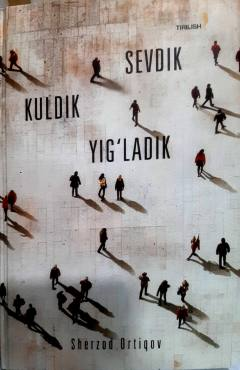

SKMuallifning buvisi xotirasiga bag'ishlangan ta'sirli va samimiy xotira-qissa.
Ushbu kitob muallifning buvisi xotirasiga bag'ishlangan ta'sirli xotira-qissadir. Unda bolalik xotiralari, yaqin insonni yo'qotish qayg'usi va hayotning o'tkinchiligi falsafiy tarzda yoritilgan.